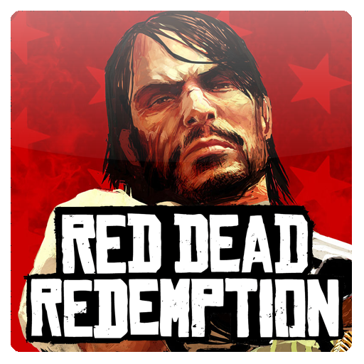
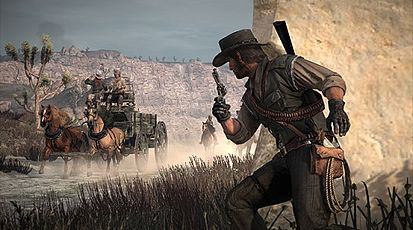
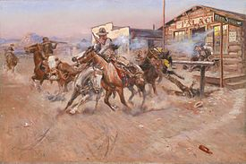
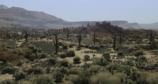

Red Dead Redemption
Red Dead Redemption é um jogo eletrônico de ação-aventura desenvolvido pela Rockstar San Diego e publicado pela Rockstar Games. Ele foi lançado em maio de 2010 para PlayStation 3 e Xbox 360, sendo um sucessor espiritual de Red Dead Revolver lançado em 2004. O jogo se passa em 1911 durante o declínio do Velho Oeste e segue a história de John Marston, um antigo fora da lei cuja esposa e filho foram tomados como reféns pelo governo para forçá-lo a trabalhar como seu pistoleiro contratado. Sem escolhas, Marston parte em uma jornada para levar três membros de sua antiga gangue até a justiça.
Combate
Tiroteios são uma importante mecânica de jogabilidade em Red Dead Redemption. O jogador pode se proteger atrás de algum objeto, mirar em um animal ou pessoa específica, atirar sem mirar ou atirar em objetos. Partes individuais do corpo também podem ser atingidas com o objetivo de subjugar inimigos não letalmente. O motor de jogo cria reações e movimentos únicos na inteligência artificial dependendo do local de impacto do tiro. O jogador tem à sua disposição armas do período como revólvers, pistolas, rifles, espingardas, fuzis de precisão, facas, explosivos, laços, metralhadoras gatling e canhões.Disponível durante tiroteios e duelos está a mecânica chamada de "Dead Eye", um sistema de mira em câmera lenta que permite que o jogador diminua o tempo momentaneamente e planeje tiros precisos em um ou vários inimigos. Marston automaticamente atira em todos os locais marcados assim que a sequência de mira termina. Red Dead Redemption também possui um sistema de procurado. Quando o jogador comete um crime como matar alguém perto de testemunhas, algumas pessoas correm para a delegacia de polícia mais próxima delatar o ocorrido. O jogador pode subornar ou matar essas pessoas antes que elas alcancem a delegacia. O medidor de procurado imediatamente aparece junto com uma recompensa se o crime for cometido perto de algum policial. A recompensa pela cabeça de Marston aumenta cada vez que um crime e cometido, com ele passando a ser perseguido pelos Delegados dos Estados Unidos ou Exército Mexicano dependendo do local. O personagem precisa escapar de uma zona circular mostrada no mapa de jogo até o medidor de procurado desaparecer a fim de fugir dos oficiais de justiça. Por outro lado, o jogador pode matar todos os policiais até o medidor desaparecer. A recompensa pela cabeça de Marston continua mesmo com a perseguição sendo abortada e caçadores de recompensa podem aparecer para matá-lo. Para eliminar a recompensa o jogador precisa pagar a quantia em uma estação de telégrafo ou apresentar uma carta de perdão. Marston automaticamente paga sua recompensa caso ele seja preso, sendo logo em seguida liberado. Caso o jogador não tenha dinheiro suficiente para pagar, os policiais lhe darão trabalhos como caçador de recompensas em troca.
Sinopse
O mundo de Red Dead Redemption é uma versão ficcional da região oeste dos Estados Unidos e do noroeste do México, se passando na "era dos vaqueiros que está chegando ao fim". O mapa de jogos é dividido em três regiões: New Austin e West Elizabeth no Estados Unidos, e Nuevo Paraíso no México. New Austin é o último remanescente do Velho Oeste a ser mapeado, conquistado e povoado, porém com enormes áreas ainda habitadas por foras da lei e animais selvagens. West Elizabeth é um local que já está recebendo a modernidade do século XX com novas cidades e tecnologias, porém ainda com uma grande área de florestas e montanhas selvagens. Já Nuevo Paraíso é uma área predominantemente desértica marcada pela guerra civil entre rebeldes e as forças leais ao governo.
Enredo
O mundo de Red Dead Redemption é uma versão ficcional da região oeste dos Estados Unidos e do noroeste do México, se passando na "era dos vaqueiros [que está] chegando ao fim". O mapa de jogos é dividido em três regiões: New Austin e West Elizabeth no Estados Unidos, e Nuevo Paraíso no México. New Austin é o último remanescente do Velho Oeste a ser mapeado, conquistado e povoado, porém com enormes áreas ainda habitadas por foras da lei e animais selvagens. West Elizabeth é um local que já está recebendo a modernidade do século XX com novas cidades e tecnologias, porém ainda com uma grande área de florestas e montanhas selvagens. Já Nuevo Paraíso é uma área predominantemente desértica marcada pela guerra civil entre rebeldes e as forças leais ao governo.
Desenvolvimento
Os trabalhos preliminares daquilo que se tornaria Red Dead Redemption começaram em 2005, com o desenvolvimento total começando no ano seguinte depois da formação da equipe principal de produção. O jogo foi desenvolvido pela Rockstar San Diego com uma equipe de oitocentas pessoas, com várias das outras subsidiárias da Rockstar Games também sendo trazidas para facilitar algumas áreas do projeto. Analistas da indústria de jogos eletrônicos estimaram que o orçamento total de desenvolvimento ficou entre oitenta milhões e cem milhões de dólares, fazendo de Red Dead Redemption um dos jogos mais caros já produzidos.
-Mundo e história-
Red Dead Redemption se passa no ano de 1911. A equipe escolheu esse período histórico por acharem intrigante a exploração da transformação do "Velho Oeste" em um mundo moderno. Os desenvolvedores se inspiraram em filmes como The Wild Bunch, High Plains Drifter, Unforgiven e The Proposition, percebendo que a maioria das histórias de faroeste se passavam entre as décadas de 1840 e 1880. O projetista e roteirista Christian Cantamessa explicou que o "tema abrangente [do jogo] é a 'Morte do Oeste' em vez do mais convencional 'Mito do Oeste' que é frequentemente visto nos clássicos filmes de John Wayne". A equipe achou que "a clássica história de 'nós estamos conquistando esta região selvagem'" não era muito interessante por si só, porém seu interesse foi despertado quando as transformações do mundo durante o período foram adicionadas. As alusões políticas feitas no decorrer da narrativa tinham a intenção de representar as conotações mais sombrias acerca das fundações do Sonho Americano. Além disso, o jogo exibe qualidades relacionadas com o movimento de saída de uma "liberdade violenta" para uma situação de "ostensivo controle estatal", contada através de uma história de inocência e liberdade. O vice-presidente de criatividade e roteirista Dan Houser fez paralelos com essa representação e os predicamentos mais recentes sobre a sociedade moderna norte-americana. Houser também expressou dificuldades em equilibrar a narrativa do jogo para evitar que ela parecesse "cafona" e "pomposa"; ele explicou que as dificuldades sugiram quando foi preciso balancear esses dois lados enquanto ao mesmo tempo tentavam manter um realismo para a história. Houser achou que a história não representava totalmente as atitudes raciais comumente associadas com o período histórico. Ele afirmou que isso foi uma escolha feita pelos projetistas de jogo devido aos dissabores das atitudes: "a linguagem que as pessoas usavam para descrever outras raças é insanamente ofensiva para os ouvidos modernos e nós insinuamos sobre isso, porém talvez nós não fazemos com a tamanha vibração que as pessoas usavam em nossa pesquisa". A equipe focou-se mais na combinação dos Estados Unidos de antigamente e o moderno junto com as mudanças que foram passadas durante o período em que a história se passa. Houser comentou a violência representada durante o jogo, falando sobre a necessidade que a equipe tinha de que a violência fosse "levemente crua e desagradável"; os desenvolvedores queriam alcançar um grande realismo mas também sem exagerarem. Eles esperavam que os jogadores tivessem uma "resposta emocional" com o jogo e que se sentissem imersos dentro do mundo e do período histórico. A equipe tentou representar elementos icônicos do Velho Oeste ao projetar os diferentes lugares ficcionais do jogo; New Austin tem pequenas cidades e postos avançados, Nuevo Paraíso inclui postos avançados rebeldes e fortes do Exército Mexicano, enquanto West Elizabeth representa as áreas civilizadas do mundo. Esses três locais representam respectivamente uma nação em desenvolvimento, um país à beira da guerra civil e uma nação avançada. O Velho Oeste norte-americano foi pesquisado em profundidade para o jogo. A equipe organizou viagens para Washington, D.C., visitou a Biblioteca do Congresso, tirou centenas de fotografias e analisou diversos filmes clássicos de faroeste. Um dos desafios enfrentados era incluir conteúdo suficiente para interessar o jogador devido ao tamanho do mapa de jogo. A equipe usou esse desafio como uma força e uma grande parte do processo de projeto, tentando fazer com que o campo fosse selvagem e com uma variedade de eventos em potencial para ocorrerem. Os desenvolvedores inicialmente acharam que poderiam usa a mesma fórmula empregada em Grand Theft Auto IV: uma grande variedade de estilos de missões com diferentes atividades e objetivos. Eles perceberam a medida que o desenvolvimento prosseguiu que o vazio do mundo impossibilitava a repetição dessa fórmula

Projeto
Assim como todos os outros jogos da empresa desde Rockstar Games Presents Table Tennis de 2006, Red Dead Redemption usa o motor de jogo proprietário Rockstar Advanced Game Engine (RAGE) para realizar as tarefas de animação e renderização, enquanto a Euphoria e a Bullet foram empregadas a fim de auxiliar na parte das físicas de jogo. Carson afirmou que a Euphoria proporcionava "um sistema de performance de personagens baseado na física" que foi "firmemente integrado com o motor de física próprio da RAGE".O escopo do mundo aberto inicialmente mostrou-se um grande desafio do ponto de vista técnico, porém a equipe usou isso em sua vantagem. O poder de processamento em potencial da RAGE foi reformulado e permitiu que o jogo alcançasse um grande nível de detalhes, incluindo animações realistas e texturas detalhadas. A Rockstar foi inspirada a começar o desenvolvimento quando a tecnologia necessária se fez disponível. O poder em potencial que o PlayStation 3 e Xbox 360 podiam ter através de seus pacotes de desenvolvimento motivou a equipe a criar um jogo que poderia renderizar completamente uma zona rural, algo que era difícil de alcançar nos consoles da sexta geração.Houser achou que as tecnologias primitivas de antes tinham impedido que os desenvolvedores criassem um jogo que "realmente fizesse justiça" ao Velho Oeste. Como exemplo, ele comentou as animações do laço: "Parece fácil mas nós apenas agora conseguimos o poder para fazer esse tipo de coisa". Houser achava que os jogos de faroeste anteriores representavam apenas um aspecto específico do período, enquanto Red Dead Redemption procurava representar todos os elementos.A equipe empregou uma variedade de texturas e efeitos de iluminação ao criarem os objetos e superfícies do mundo de jogo. Eles acharam que foi difícil criar uma representação realista da natureza; "[computadores] não desenham curvas, porém a natureza é toda sobre curvas", explicou Houser.
